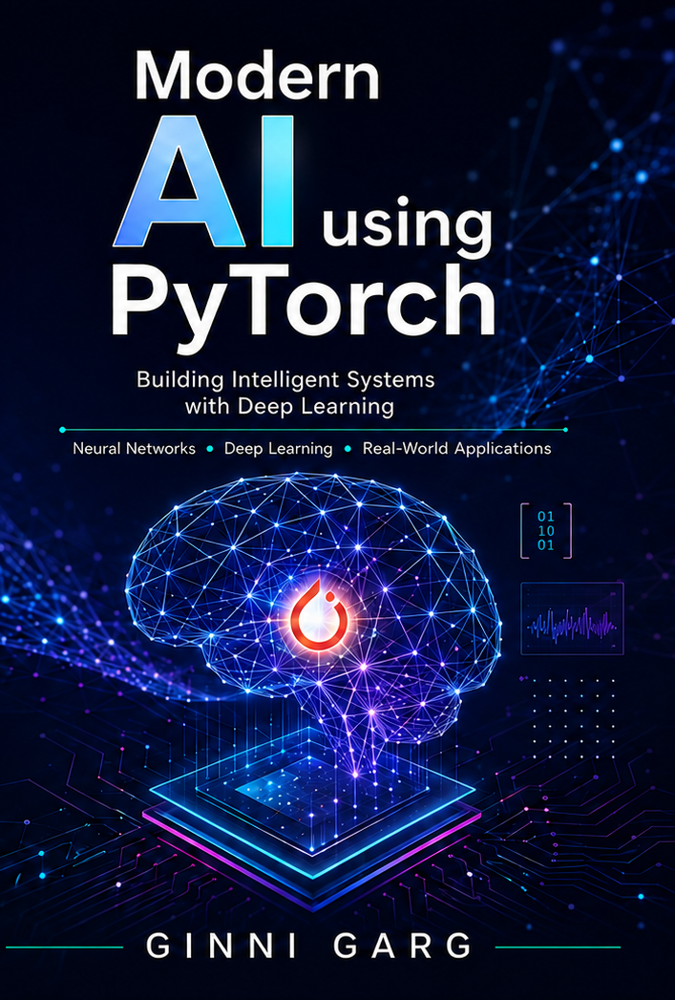

Learn Artificial Intelligence from scratch using Python and PyTorch.

This book provides a comprehensive, hands-on journey through modern Artificial Intelligence and Large Language Models (LLMs) using Python and PyTorch. Rather than relying solely on high-level libraries, readers build the fundamental components of AI systems from scratch, gaining a deep understanding of how machine learning and transformer-based models work internally.
The book begins with Python programming essentials, introducing functions, algorithms, object-oriented programming, and Jupyter notebooks before progressing to mathematical foundations. Readers learn the core concepts of linear algebra, including vectors, matrices, tensors, dot products, and matrix operations that form the basis of machine learning computations.
Next, the book explains automatic differentiation, computation graphs, forward and backward propagation, gradient accumulation, and gradient descent by implementing a complete autograd engine and training a linear classifier from scratch. Building upon these concepts, readers develop the essential components required for neural network training, including linear layers, stochastic gradient descent, data loaders, optimization loops, and multi-layer neural networks using PyTorch.
The second half of the book focuses on modern transformer architectures and Large Language Models. Readers implement every major building block of a transformer, including embeddings, normalization layers, activation functions, masked self-attention, multi-head attention, key-value caching, gated MLPs, transformer blocks, and autoregressive text generation, culminating in a complete implementation of an LLaMA-style model entirely from scratch.
The book then explores the complete lifecycle of training a Large Language Model. It covers tokenizer construction using Byte Pair Encoding (BPE), vocabulary generation, dataset preprocessing, efficient tokenization, transformer implementation, cross-entropy loss, memory-efficient data loading, the Adam optimizer, and end-to-end language model training. Readers progressively scale their implementations from small experimental models to larger, more capable language models while learning practical techniques for efficient training and inference.
Finally, the book introduces post-training alignment techniques that enable LLMs to function as conversational AI assistants. Readers learn supervised fine-tuning (SFT), chat dataset preparation, conversation formatting, masking strategies, pretrained model loading, chat model training, and Direct Preference Optimization (DPO). The final chapters demonstrate how to align language models with human preferences by computing sequence log probabilities and implementing a complete DPO training pipeline.
By the end of the book, readers will have implemented the complete AI development pipeline from Python programming and mathematical foundations to neural networks, transformer architectures, Large Language Model training, supervised fine-tuning, and preference alignment. This practical, code-first approach equips students, researchers, and AI practitioners with both the theoretical understanding and implementation skills needed to build modern AI systems from first principles using Python and PyTorch.
Ginni Garg is currently working as Scientist at the Centre for Development of
Telematics (C-DOT), Delhi. He completed his B.Tech from NIT Kurukshetra with
majors in CSE. He is a technologist and AI enthusiast with a strong focus on modern
machine learning systems, deep learning architectures, and practical applications of artificial
intelligence. With a passion for bridging theory and implementation, the author has worked
on building intuitive explanations of complex AI concepts, making them accessible to
students, practitioners, and curious learners alike.
Modern AI reflects this approach blending conceptual clarity with hands-on understanding
of how today’s AI systems are designed, trained, and deployed. The book is a result of
continuous exploration in areas such as neural networks, large language models, and
emerging paradigms in generative AI.
Beyond writing, Ginni Garg actively shares work, projects, and technical insights through
their personal platform, contributing to the broader AI learning community.
More about the author and ongoing work can be found at:
Author Bio